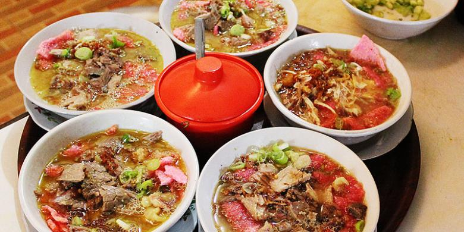

Bahan-bahan
1/2kg dada ayam
Bahan Kuah :
2 liter kaldu ayam (didapat dari rebusan 1/2kg ayam)
3 lembar daun salam
1 batang serei geprek
2 iris lengkuas geprek
secukupnya garam
secukupnya kaldu bubuk
Bumbu Halus :
5-6 siung bawang putih
10-15 merica butir
4-5 butir kemiri
2cm jahe
1 ruas kecil kunyit
Bahan isi :
ketupat potong kotak
mi soun rendam air hangat, tiriskan
suwiran ayam goreng
Sambal Kacang :
250 gram kacang tanah goreng, haluskan
150 gram gula merah/gula pasir
secukupnya cabe merah kriting goreng
3 siung bawang putih, goreng utuh sebentar saja
secukupnya garam
Taburan :
Krupuk aci merah/bawang/singkong/mireng
Bawang merah goreng
Daun bawang iris
Kecap manis
Pelengkap :
Sambel rawit rebus(cabe rawit direbus, tiriskan haluskan, siram dgn kuah soto)
Cara Membuat :
1. Rebus Ayam + garam secukupnya sampai lunak dengan 2 liter air (dilebihkan airnya) karena akan menyusut.
kemudian ambil ayamnya, ditirkan lalu goreng
2. Didihkan kaldu. Tumis sampai harum bumbu halus+serei+lengkuas+daun salam, masukkan ke kaldu, masukkan garam
dan kaldu bubuk, masak sampai mendidih lalu koreksi rasa.
3. Sambal kacang : kacang tanah goreng diulek barengan dengan cabe merah + bawang putih goreng+gula merah+garam,
lalu dikasih air panas / air kaldu sampai kental(bisa tidak memakai cabe merah dikarenakan sudah ada cabe rawit yang direbus
Penyajian :
Tata potongan ketupat dimangkuk, lalu mi soun, kecambah, kerupuk, sambal kacang, suwiran ayam,
kecap manis, ditaburi bawang goreng dan daun bawang , siram dengan kuah kaldu panas.